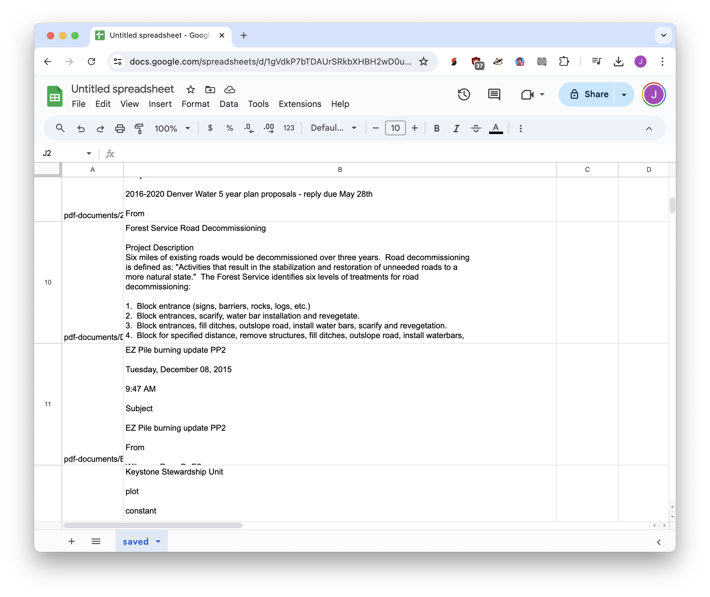

%pip install --quiet --upgrade pdfminer.six
[notice] A new release of pip is available: 23.0.1 -> 24.1.2
[notice] To update, run: pip install --upgrade pip
Note: you may need to restart the kernel to use updated packages.If you have a PDF with selectable text, it’s simple to extract the text using pdfminer.six, a Python tool. And if you’re not using Python, just could just cut and paste!
We’ll start by installing pdfminer.six.
[notice] A new release of pip is available: 23.0.1 -> 24.1.2
[notice] To update, run: pip install --upgrade pip
Note: you may need to restart the kernel to use updated packages.Once it’s installed, pdfminer.six is remarkably easy to use!
from pdfminer.high_level import extract_text
text = extract_text("pdf-documents/presentation.pdf")
print(text)powerpoint
Tuesday, December 08, 2015
9:33 AM
Subject
powerpoint
From
To
Sent
Attachments
Green, Cary -FS
Jackson, William F -FS
Friday, May 01, 2015 10:58 AM
SumCo
Forest He...
Bill – here is a powerpoint presentation from last fall that I presented to Summit County citizens. Has
some of the data you were asking for earlier.
Cary
Cary Green, Forester
East Zone TMA
Forest Service
White River National Forest, Eagle/Holy Cross Ranger District
p: 970-827-5160
c: 970-390-3234
f: 970-827-9343
cgreen@fs.fed.us
24747 US Highway 24, PO Box 190
Minturn, CO 81645
www.fs.fed.us
Caring for the land and serving people
General Page 1
But you usually don’t just have one PDF, usually you have a lot of them!
In the most common use case, you have a folder full of PDFs and you need to convert them into a CSV file, where every row has the PDF content. Then you can use the tools we talked about to analyze them with Google Sheets or Python.
[notice] A new release of pip is available: 23.0.1 -> 24.1.2
[notice] To update, run: pip install --upgrade pip
Note: you may need to restart the kernel to use updated packages.import glob
import pandas as pd
from pdfminer.high_level import extract_text
pd.options.display.max_colwidth = 200
# Find all of the pdfs from inside of the "pdf-documents" folder
filenames = glob.glob("pdf-documents/*.pdf")
# Get the text for each of them
contents = [extract_text(filename) for filename in filenames]
# Turn it into a spreadsheet
df = pd.DataFrame({
'filename': filenames,
'content': contents
})
# Save the file as saved.csv
df.to_csv("saved.csv", index=False)
df| filename | content | |
|---|---|---|
| 0 | pdf-documents/Forest Service burn piles.pdf | Forest Service burn piles\n\nTuesday, December 08, 2015\n\n9:54 AM\n\nSubject\n\nForest Service burn piles\n\nFrom\n\nJackson, William F -FS\n\nTo\n\nCc\n\nbrownellbailey@gmail.com\n\nWilmore, Ros... |
| 1 | pdf-documents/April 3 - Dillon Veg project activity meeting.pdf | April 3 - Dillon Veg project activity meeting\n\nTuesday, December 08, 2015\n\n8:44 AM\n\nSubject\n\nApril 3 - Dillon Veg project activity meeting\n\nFrom\n\nGreen, Cary -FS\n\nTo\n\nCc\n\nWilmore... |
| 2 | pdf-documents/7 Day Staffing.pdf | 7 Day Staffing\n\nTuesday, December 08, 2015\n\n9:57 AM\n\nSubject\n\n7 Day Staffing\n\nFrom\n\nConrad, Justin D -FS\n\nTo\n\nCc\n\nWilmore, Ross D -FS; Neely, David -FS; Mayville, Aaron W -FS; Ke... |
| 3 | pdf-documents/EZ Pile campaign update PP3.pdf | EZ Pile campaign update PP3\n\nTuesday, December 08, 2015\n\n9:48 AM\n\nSubject\n\nEZ Pile campaign update PP3\n\nFrom\n\nTo\n\nWilmore, Ross D -FS\n\nMayville, Aaron W -FS; Keller, Cynthia P -FS;... |
| 4 | pdf-documents/BOCC to Howard Brown May 2015 from Karn.pdf | BOCC to Howard Brown May 2015.docx\n\nTuesday, December 08, 2015\n\n8:22 AM\n\nSubject\n\nBOCC to Howard Brown May 2015.docx\n\nFrom\n\nTo\n\nSent\n\nAttachments\n\nKarnS\n\nJackson, William F -FS... |
| 5 | pdf-documents/presentation.pdf | powerpoint\n\nTuesday, December 08, 2015\n\n9:33 AM\n\nSubject\n\npowerpoint\n\nFrom\n\nTo\n\nSent\n\nAttachments\n\nGreen, Cary -FS\n\nJackson, William F -FS\n\nFriday, May 01, 2015 10:58 AM\n\nS... |
| 6 | pdf-documents/BOCC to Howard Brown May 2015.pdf | Board of County Commissioners \n\n970-453-2561 \nPost Office Box 68 \n208 East Lincoln Avenue \nBreckenridge, Colorado 80424 \n\nMay 7, 2015 \n\nMr. Howard Brown \n376 Spring Beauty Dr. \nP.O. Box... |
| 7 | pdf-documents/2016-2020 Denver Water 5 year plan proposals - reply due May 28th.pdf | 2016-2020 Denver Water 5 year plan proposals - reply \ndue May 28th\n\nTuesday, December 08, 2015\n\n8:18 AM\n\nSubject\n\n2016-2020 Denver Water 5 year plan proposals - reply due May 28th\n\nFrom... |
| 8 | pdf-documents/DWB_ProjectProposals_Recreation_5_29_15.pdf | Forest Service Road Decommissioning \n\nProject Description \nSix miles of existing roads would be decommissioned over three years. Road decommissioning \nis defined as: "Activities that result i... |
| 9 | pdf-documents/EZ Pile burning update PP2.pdf | EZ Pile burning update PP2\n\nTuesday, December 08, 2015\n\n9:47 AM\n\nSubject\n\nEZ Pile burning update PP2\n\nFrom\n\nWilmore, Ross D -FS\n\nTo\n\nMayville, Aaron W -FS; Keller, Cynthia P -FS; G... |
| 10 | pdf-documents/Copy of KeystoneStewardship.pdf | Keystone Stewardship Unit \n\nplot\n\nconstant\n\n1\n\n2\n\n3\n\n4\n\n5\n\n6\n\n7\n\n8\n\n9\n\n10\n\n11\n\n12\n\ntotal\n\n11.64\n\n11.64\n\n11.64\n\n11.64\n\n11.64\n\n11.64\n\n11.64\n\n11.64\n\n11... |
| 11 | pdf-documents/Breckenridge Prescribed Burn Operations.pdf | Breckenridge Prescribed Burn Operations\n\nTuesday, December 08, 2015\n\n9:45 AM\n\nSubject\n\nBreckenridge Prescribed Burn Operations\n\nFrom\n\nAyres, Todd -FS\n\nTo\n\nCc\n\nSent\n\nalangley (a... |
| 12 | pdf-documents/2015 Summit County AOP Final Version 150330.pdf | 2015 SUMMIT COUNTY WILDFIRE \nANNUAL OPERATING PLAN \n\nPage 1 of 48 \n\n \n \n \n \n \n Contents \nPREAMBLE .......................................................................................... |
| 13 | pdf-documents/FW News Item -- Citizens Plead for Stop to Ophir Mountain Clear-Cutting.pdf | FW: News Item -- Citizens Plead for Stop to Ophir \nMountain Clear-Cutting\n\nTuesday, December 08, 2015\n\n8:51 AM\n\nSubject\n\nFW: News Item -- Citizens Plead for Stop to Ophir Mountain Clear-C... |
| 14 | pdf-documents/Dillon_CCI Needs Summer 2015.pdf | WRNF Request for CCI Assistance \n\n2015 \n\nDillon RD CCI Needs Summer 2015 \n\n1) Burn pile rehab (Keystone, Swan, Barton, Peak 7 South) scatter or pile burned debris depending on \namount, scar... |
| 15 | pdf-documents/EZ Pile Burning Update PP 1.pdf | EZ Pile Burning Update PP 1\n\nTuesday, December 08, 2015\n\n9:44 AM\n\nSubject\n\nEZ Pile Burning Update PP 1\n\nFrom\n\nWilmore, Ross D -FS\n\nTo\n\nMayville, Aaron W -FS; Keller, Cynthia P -FS;... |
| 16 | pdf-documents/Mount Powell Salvage Timber Sale.pdf | Mount Powell Salvage Timber Sale\n\nTuesday, December 08, 2015\n\n8:26 AM\n\nSubject Mount Powell Salvage Timber Sale\n\nFrom\n\nCunning, Ken -FS\n\nTo\n\nCc\n\nJackson, William F -FS\n\nBraudis, ... |
| 17 | pdf-documents/BOCC Response Letter to Howard Brown Petition.pdf | BOCC Response Letter to Howard Brown Petition\n\nTuesday, December 08, 2015\n\n8:21 AM\n\nSubject\n\nBOCC Response Letter to Howard Brown Petition\n\nFrom\n\nTo\n\nSent\n\nAttachments\n\nEvaH\n\nJ... |
| 18 | pdf-documents/Jackson_email-02.pdf | Kight, Bill -FS\n\nFrom:\nSent:\nTo:\nSubject:\nSigned By:\n\nJackson, William F -FS\nSaturday, February 07, 2015 6:29 AM\nFS-pdl r2 wr dillon rd\nFW: EZ Pile burning update PP2\nwfjackson@fs.fed.... |
| 19 | pdf-documents/Jackson_email-01.pdf | Kight, Bill -FS\n\nFrom:\nSent:\nTo:\nCc:\nSubject:\n\nKight, Bill -FS\nFriday, November 14, 2014 1:11 PM\nKight, Bill -FS\nFS-r2_whiteriver\nCrews to begin burning slash piles in Summit County Mo... |
Even though we can only see a little bit of the content, I promise it’s all there! Excel will have trouble opening the file (it doesn’t like that the PDF content takes up multiple lines), but if you add it to Google Sheets it’ll look great.

If you need to use OCR to turn images into text, I recommend taking a look at the links on the front page.